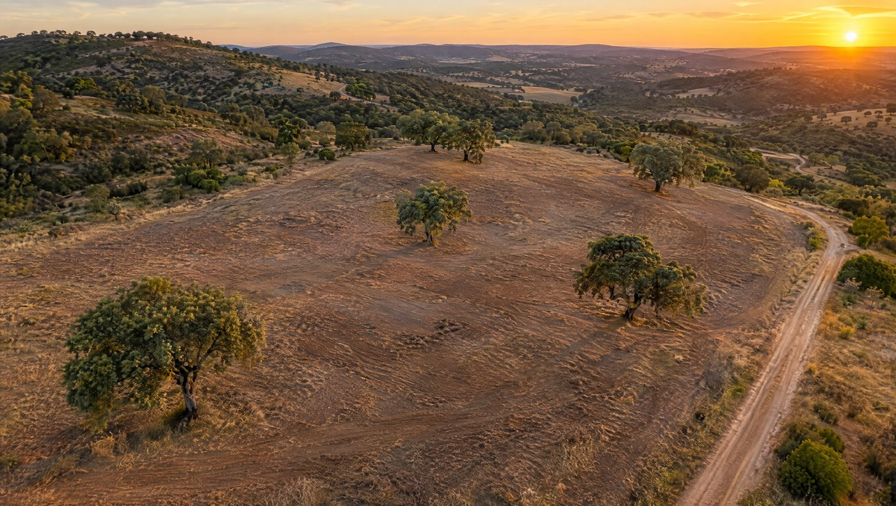
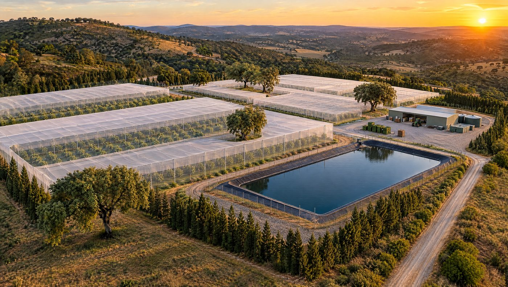
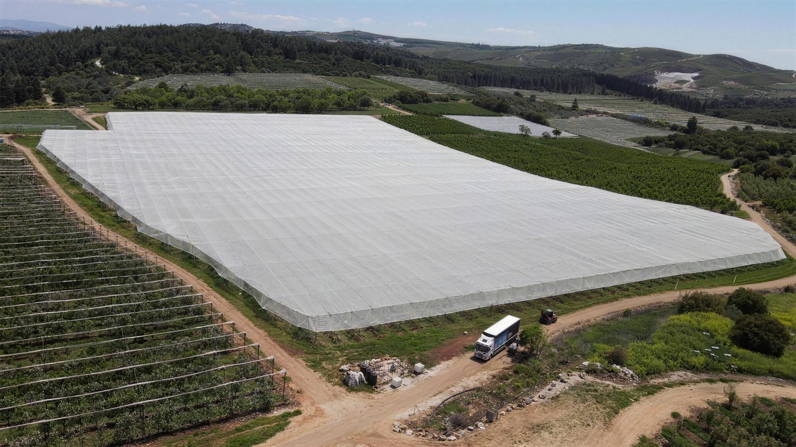
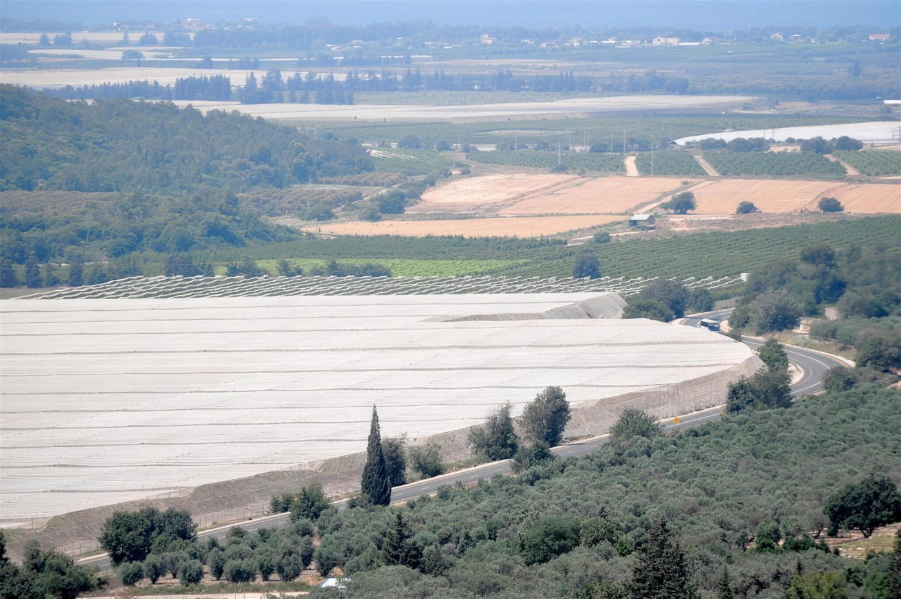
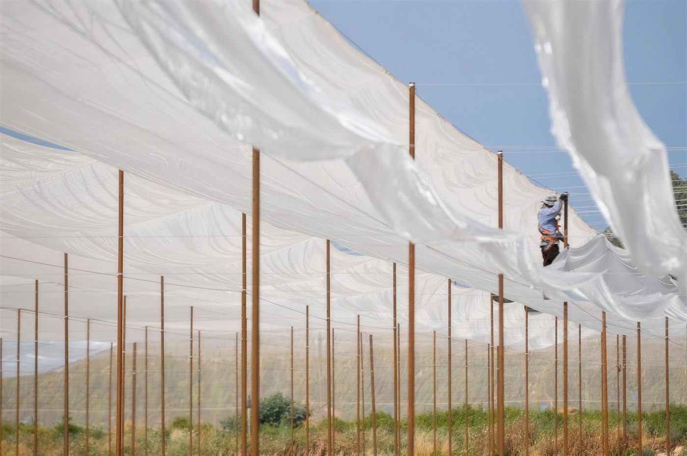

- יש שני סוגים של ״השקעה בחקלאות״. בראשון קונים קרקע ומחכים לשינוי ייעוד. בשני מקימים חווה פעילה, והתשואה מגיעה מהיבול. המדריך הזה עוסק בסוג השני.
- פרויקט Turnkey חקלאי פירושו צוות אחד שאחראי על הכול: מבדיקת הקרקע והתוכנית העסקית, דרך המבנים, ההשקיה והנטיעה, ועד ניהול הגידול, הקטיף והשיווק.
- שלושה דברים נשארים אצל המשקיע: רישוי והיתרים מקומיים, המבנה המשפטי, התאגידי והמיסויי, ודיווח שוטף לבעלים.
- לפני שחותמים, כדאי לעבור על 10 שאלות של בדיקת נאותות. הן מבוססות על הנחיות FAO ו-OECD להשקעה אחראית בחקלאות.
- אנחנו עובדים עם פרויקטים מ-30 הקטר בחו״ל ומ-50 דונם בישראל.
מי שמחפש היום בעברית ״השקעה בחקלאות״ מוצא בעיקר דבר אחד: קרקע חקלאית שמחכה להפשרה. זה מודל לגיטימי, אבל בפועל זו השקעה בנדל״ן, שהערך שלה נקבע בוועדות התכנון. המדריך הזה עוסק בהשקעה בחקלאות בחו״ל מסוג אחר.
מדובר בחווה חקלאית פעילה בחו״ל, שמגדלת, קוטפת ומוכרת. במודל הזה הערך נבנה בשטח, מעונה לעונה. הוא נשען על תכנון נכון, על מבנים שמחזיקים, על השקיה מדויקת ועל צוות שיודע לנהל גידול. את הצד ההנדסי של המבנים אנחנו מפרטים במדריך על תכנון והקמת בתי רשת. כאן נתמקד בתמונה המלאה, כפי שמשקיע צריך לראות אותה.
הביקוש קיים. לפי FAO, כדי לעמוד בביקוש החקלאות תצטרך לייצר ב-2050 כמעט 50% יותר מזון, מספוא ודלק ביולוגי מאשר ב-2012. התחזית נשענת על אוכלוסייה עולמית של 9.73 מיליארד איש1. FAO מצביע גם על מעבר תזונתי בארצות ההכנסה הנמוכה והבינונית, לכיוון צריכה גבוהה יותר של בשר, פירות וירקות1. אבל ביקוש עולמי הוא רקע, לא תוכנית עסקית. השאלה שמעניינת משקיע היא אחרת: האם החווה הזאת, על הקרקע הזאת, עם הגידול הזה, תעבוד.
מתאים לכם אם
- אתם משקיעים פרטיים, חברה חקלאית או יזמים שבוחנים פרויקט של 30 הקטר ומעלה בחו״ל.
- אתם מחפשים חווה מניבה שמייצרת יבול, ולא קרקע שמחכה לשינוי ייעוד.
- אתם רוצים שותף אחד שאחראי מהקרקע ועד שיווק היבול, ולא עשרה ספקים שצריך לתאם ביניהם.
פחות מתאים אם
- מדובר בשטח קטן מ-30 הקטר בחו״ל או מ-50 דונם בישראל.
- אתם מחפשים הצעת מחיר לרכיב אחד בלבד, לפני שיש קרקע, גידול ותוכנית.
- אתם מצפים להבטחת תשואה. בחקלאות אמיתית אין כזו, ומי שמבטיח אותה צריך להסביר איך.
קרקע להשקעה או חווה פעילה? ההבדל שחשוב להבין
שני המודלים נקראים ״השקעה בחקלאות״, אבל הם עונים על שאלות שונות. אף אחד מהם אינו ״נכון״ יותר. ההבדל הוא במה שמייצר את הערך, ובמה שאתם צריכים מהשותפים שלכם. הטבלה מסכמת את ההבדלים בלי שיפוט.
| קריטריון | קרקע להשקעה | חווה פעילה |
|---|---|---|
| מקור התשואה | עליית ערך הקרקע, בעיקר אם הייעוד משתנה | מכירת היבול, עונה אחרי עונה |
| מה בבעלותכם | זכויות בקרקע | קרקע או זכות שימוש בה, מבנים, מערכות השקיה, מטע ועסק פעיל |
| ציר הזמן | תלוי בהליכי תכנון שאינם בשליטת המשקיע | תלוי בגידול: שנות הקמה עד יבול מסחרי, ואחריהן מחזור עונתי |
| מה מניע את הסיכון | החלטות תכנון ורגולציה, נזילות | אקלים, מים, כוח אדם, איכות ביצוע, מחירי שוק |
| מה אפשר לנהל | מעט: בעיקר את העיתוי של המכירה | הרבה: בחירת גידול, תכנון מבנים, הגנה מאקלים, אגרונומיה ושיווק |
| מה נדרש מהשותפים | ליווי משפטי ותכנוני | צוות חקלאי והנדסי שמקים ומנהל, לאורך שנים |
השורה החשובה בטבלה היא ״מה אפשר לנהל״. בחווה פעילה רוב הסיכונים ניתנים לניהול, אם מתכננים אותם מראש. בית רשת מקטין את החשיפה לברד, לרוח ולקרה. תכנון השקיה מדויק מקטין את התלות במים. וצוות שמכיר את הגידול מקטין טעויות של עונה ראשונה. לכן חשוב כל כך מי מקים ומנהל את החווה.
מה זה פרויקט Turnkey חקלאי
פרויקט Turnkey חקלאי (פרויקט מפתח) הוא הקמה של חווה מקצה לקצה על ידי צוות אחד. הצוות אחראי על בדיקת הקרקע והתוכנית העסקית, על תכנון והקמה של המבנים, ההשקיה והמטע, ועל ניהול הגידול, הקטיף והשיווק. המשקיע מקבל חווה עובדת וכתובת אחת לכל שאלה.
בפועל, ״מפתח״ לא אומר שמוסרים לכם מפתח ונעלמים. בחקלאות, הרגע שבו ההקמה מסתיימת הוא בדיוק הרגע שבו העבודה האמיתית מתחילה. לכן הפרויקטים שלנו כוללים גם את שלב הגידול עצמו: ניהול שוטף, אגרונומיה, תחזוקה, קטיף ושיווק היבול.
ההבדל המהותי הוא באחריות. כשיש קבלן לכל רכיב, כל אחד אחראי רק לחלק שלו. כשהמבנה לא מתאים למערכת ההשקיה, או כשהנטיעה מתעכבת כי הרכש לא הגיע בזמן, אין מי שאחראי לתמונה כולה. במודל Turnkey יש גורם אחד. ויש לו אינטרס אחד: שהחווה תעבוד.


11 השלבים, מהקרקע ועד שיווק היבול
אלה תחומי העבודה שאנחנו מבצעים בפרויקט Turnkey. הסדר הוא סדר ההתקדמות האופייני, אבל חלק מהשלבים חופפים. רכש ולוגיסטיקה, למשל, מתחילים עוד לפני שהתכנון מסתיים. לא ציינו משכי זמן בכוונה: הם תלויים בגידול, במדינה ובקרקע, ונקבעים בתוכנית העסקית.
- בדיקת קרקע והתאמת גידולבדיקות קרקע ומים, ניתוח אקלים ובחירת גידול שמתאים לקרקע הזו ולשוק שאליו הוא מיועד. כאן גם מסייעים באיתור קרקע מתאימה, אם עוד אין כזו. זה השלב שבו נמנעות הטעויות היקרות ביותר.
- תוכנית עסקית ותקציב למשקיעתקציב הקמה, תקציב תפעול ותזרים לפי שלבי הגידול. התוכנית מבוססת על תנאי השטח, לא על ממוצע כללי.
- תכנון החווה: מבנים, השקיה ודרכיםמיקום בתי הרשת, סככות ושוברי רוח, מערך ההשקיה, הדרכים הפנימיות ומיקום מבני השירות. התכנון לוקח בחשבון רוח, שיפועים, ניקוז וגישה של משאיות.
- הקמת מבנים ובתי רשתעמודים, רשתות, כבלים ואביזרים מיוצרים ונבדקים במפעל שלנו לפני שהם יוצאים לשטח, או מיוצרים במדינת היעד בפיקוח שלנו, כפי שעשינו בבלארוס. ההתקנה נעשית בידי צוותים מבוטחים ומוסמכים לעבודה בגובה.
- מערכות השקיהתכנון והקמה של מערכת ההשקיה לפי הגידול, הקרקע ומקור המים, כולל השילוב עם המבנים.
- רכש ולוגיסטיקהשתילים, חומרים וציוד, בתיאום עם לוח הזמנים של ההקמה, כדי שכל רכיב יגיע לשטח כשצריך אותו.
- נטיעה והקמת המטעהכנת השטח, נטיעה וליווי המטע הצעיר בשנים הרגישות ביותר שלו.
- גיוס וניהול עובדים מקומייםבניית צוות מקומי, הדרכה וניהול יומיומי. חווה בחו״ל עובדת עם אנשים מקומיים, ולכן הם צריכים להבין את השיטה ולא רק לבצע הוראות.
- ניהול גידול שוטף ואגרונומיהתוכנית השקיה ודישון, הגנת הצומח והחלטות עונתיות, בהובלה אגרונומית.
- תחזוקהתחזוקה של המבנים, הרשתות ומערכות ההשקיה לאורך שנים, לפני שבעיה קטנה הופכת לנזק.
- קטיף ושיווק היבולארגון הקטיף, ושיווק היבול לשווקים שהוגדרו בתוכנית העסקית.
מה צריכה לכלול תוכנית עסקית לחווה חקלאית
תוכנית עסקית טובה לחווה היא לא מצגת עם גרף תשואה עולה. היא מסמך שעונה על שאלות קשות לפני שמוציאים את השקל הראשון. אלה הרכיבים שאנחנו מקפידים עליהם:
- הנחות גלויות. כל מספר בתוכנית מבוסס על בדיקה בשטח או על מקור שאפשר לבדוק: בדיקת קרקע, בדיקת מים, נתוני אקלים מקומיים.
- תקציב הקמה ותקציב תפעול בנפרד. משקיעים רבים מתכננים את ההקמה ושוכחים שהמטע צריך מימון גם בשנים שבהן אינו מניב עדיין.
- תזרים לפי שלבי הגידול. מתי נכנסות הוצאות, מתי צפוי יבול ראשון, ומתי הוא הופך מסחרי. כל זה לפי הגידול שנבחר.
- תרחיש של עונה רעה. מה קורה אם עונה אחת נפגעת מברד, מקרה או מגל חום? ומה המבנה מגן ומה לא?
- שוק יעד מוגדר. לאן הולך היבול, באיזו דרך, ובאילו דרישות איכות.
עובדים מקומיים: איפה פרויקטים בחו״ל מצליחים או נתקעים
אפשר לתכנן מבנה מצוין ולשתול זן מתאים, ועדיין לאבד עונה כי הצוות בשטח לא הבין מה עושים ולמה. לכן גיוס והדרכה של עובדים מקומיים הם חלק מהפרויקט, ולא ״שירות נלווה״. המטרה היא צוות מקומי שמכיר את השיטה ויודע לזהות בעיה בזמן. צוות כזה נשאר עם החווה גם אחרי שההקמה מסתיימת.
למה חשוב שהרכיבים נבדקים לפני שהם יוצאים לשטח
בפרויקט בחו״ל, כל רכיב שנכשל בשטח עולה פי כמה. הוא עולה במשלוח חוזר, בזמן של צוות שממתין, ולפעמים בעונה שלמה. לכן רכיבי המבנה מיוצרים ונבדקים במפעל שלנו לפני שהם נארזים, וכשהם מגיעים לשטח הם כבר עברו את הבדיקה. כשהייצור נעשה במדינת היעד, כמו בבלארוס, הפיקוח על הייצור נשאר בידינו.
„השירות מקצועי, אמין ואיכותי, ועבודת השטח מבוצעת תמיד בדייקנות.”

רוצים לעבור על הרשימה הזו מול הקרקע שלכם? ספרו לנו מה המדינה, מה מצב הקרקע ומה הגידול שאתם בוחנים, ונחזור עם בדיקת התאמה ראשונית.
מי אחראי על מה: מטריצת האחריות
משקיע צריך לדעת בדיוק איפה עובר הגבול של השירות. לכן אנחנו מציגים אותו כבר בשיחה הראשונה. הטבלה מפרטת מה באחריותנו ומה נשאר אצלכם.
| תחום | מיפתח | המשקיע |
|---|---|---|
| בדיקת קרקע והתאמת גידול | מבצעים | מחליטים יחד איתנו על הגידול |
| תוכנית עסקית ותקציב | מכינים | מאשרים |
| תכנון החווה (מבנים, השקיה, דרכים) | מבצעים | מאשרים |
| הקמת מבנים ובתי רשת | מייצרים ומקימים (במפעל שלנו, או בייצור מקומי בפיקוחנו) | לא נדרש |
| מערכות השקיה | מתכננים ומקימים | לא נדרש |
| רכש ולוגיסטיקה | מנהלים | לא נדרש |
| נטיעה והקמת המטע | מבצעים | לא נדרש |
| גיוס וניהול עובדים מקומיים | מבצעים | לא נדרש |
| ניהול גידול ואגרונומיה | מבצעים | לא נדרש |
| תחזוקה | מבצעים | לא נדרש |
| קטיף ושיווק היבול | מבצעים | לא נדרש |
| רישוי והיתרים במדינת היעד | מתכננים בהתאם למגבלות שעולות מההיתרים | באחריותכם, עם יועצים מקומיים |
| מבנה משפטי, תאגידי ומיסויי | אינו חלק מהשירות | באחריותכם, עם עורך דין ורואה חשבון |
| דיווח שוטף לבעלים ולמשקיעים | אינו חלק מהשירות | מגדירים מראש, דרך הגורם הפיננסי שלכם |
רישוי והיתרים. אנחנו לא מטפלים ברישוי ובהיתרים במדינת היעד. ההיתר באחריות היזם, וכדאי להתחיל בו מוקדם, כי הוא עשוי להשפיע על התכנון כולו. מה שאנחנו כן עושים: מתכננים את החווה בהתאם למגבלות שעולות מההיתרים, ועובדים מול היועצים המקומיים שלכם.
מבנה משפטי ומיסוי. אלה החלטות של המשקיע ושל היועצים שלו. משקיעים ישראלים צריכים לדעת שיש חובת דיווח לרשות המסים על כספים ונכסים במדינות אחרות, כולל הכנסות תאגידיות וחשבונות בנק10. כדאי לבנות את המבנה עם רואה חשבון לפני שמתחייבים לקרקע.
דיווח לבעלים. אנחנו מנהלים את הגידול, אבל דיווח שוטף ומסודר לבעלים ולמשקיעים אינו חלק מהשירות. מומלץ להגדיר אותו מההתחלה, דרך רואה החשבון או מנהל ההשקעה מטעמכם, כדי שתהיה לכם תמונה עצמאית של הפרויקט.
סיכון אקלים הוא סעיף בתוכנית העסקית
בחווה פעילה, אירוע מזג אוויר אחד יכול למחוק עונה. זה לא תרחיש תיאורטי. בישראל, פיצויי קנט על נזקי מזג אוויר לחקלאות הגיעו ב-2025 לכ-450 מיליון ₪, שיא של יותר מעשור4. גם באירופה המגמה ברורה. מחקר של ESSL שמשחזר את התקופה 1950–2021 מצא שתדירות הברד עלתה ברוב אירופה. בצפון איטליה, ברד גדול מאוד (5 ס״מ ומעלה) סביר היום פי שלושה מאשר בשנות החמישים5.
התחזיות קדימה מורכבות יותר, וחשוב לקרוא אותן נכון. לפי מחקר שפורסם ב-2019, בתרחיש פליטות גבוה (RCP8.5) הסבירות לברד גדול (2 ס״מ ומעלה) במרכז אירופה צפויה לעלות ב-40% עד 80% עד סוף המאה. בדרום-מערב אירופה, האזור של פורטוגל, החוקרים צופים ירידה קלה במספר הסופות, אבל עלייה בסבירות למזג אוויר קיצוני6. במילים פשוטות: פחות סופות, וחלקן חמורות יותר. גם בתוך פורטוגל יש הבדלים. דוח CIRAD מתאר את אזור Alentejo Litoral כאזור סוער יותר, עם סיכון גבוה יותר לקרה ולגל חום מזדמן3.
המשמעות למשקיע: בית רשת אינו תוספת שמחליטים עליה אחרי שהמטע ניטע. הוא חלק מהתוכנית העסקית מהיום הראשון. מבנה שמתוכנן נכון מגן על המטע הצעיר מברד, מרוח ומקרה, ומקטין את התנודתיות בתזרים לעומת שטח פתוח. אם הגידול שלכם הוא אבוקדו, פירטנו את השיקולים במדריך על בית רשת לאבוקדו. למטעי נשירים ראו את המדריך על הגנה מברד במטע.
גידול תחת כיסוי כבר נפוץ מאוד בעולם. לפי הערכה של חברת הייעוץ Cuesta Roble, השטח העולמי של חקלאות מוגנת, כלומר כל גידול תחת כיסוי, כולל מנהרות ובתי רשת, עמד ב-2019 על כ-5.63 מיליון הקטר11. זו הערכה של חברה פרטית ולא סטטיסטיקה רשמית.
בדיקת נאותות: 10 שאלות לשאול לפני שחותמים
ארגון המזון והחקלאות של האו״ם (FAO) ומרכז ההשקעות הבר-קיימא של אוניברסיטת קולומביה (CCSI) פרסמו ב-2024 מדריך לבדיקת השקעות בחקלאות. המדריך נכתב עבור ממשלות שבוחנות משקיעים, ולכן הוא שימושי במיוחד למשקיע. אלה השאלות שמדינת היעד עשויה לשאול אתכם. בין הנושאים: ניסיון ומומחיות, היסטוריית ביצוע, היתכנות התוכנית העסקית, שינויי אקלים, שימוש במשאבי טבע, התאמת האתר (גיאוגרפיה ותשתיות) וזכויות בקרקע7. מסגרת משלימה היא ההנחיות המשותפות של OECD ו-FAO לשרשראות אספקה חקלאיות אחראיות (2016). הן מגדירות חמישה צעדים מעשיים לזיהוי, הערכה, צמצום ודיווח של סיכונים. תחומי הסיכון שהן מונות כוללים, בין היתר, זכויות עובדים, משאבי טבע, זכויות בקרקע, שינויי אקלים וממשל89.
על בסיס שתי המסגרות, ומניסיון השטח שלנו, אלה עשר השאלות שהיינו שואלים לפני חתימה:
- זכויות בקרקע: מי הבעלים הרשומים? האם יש זכויות שימוש מסורתיות או תביעות של קהילות מקומיות? האם הבעלות או החכירה נבדקו בידי עורך דין מקומי?
- מים: מה מקור המים, ומה מעמדו המשפטי? האם הזכות למים מעוגנת לאורך כל חיי המטע? מה צפוי לקרות לזמינות המים בעשור הקרוב?
- התאמת קרקע וגידול: האם נעשו בדיקות קרקע ומים בשטח עצמו, ולא רק הערכה לפי האזור?
- סיכון אקלים: מה החשיפה לברד, לרוח, לקרה ולגלי חום? איך התוכנית מתמודדת איתם, ואיפה זה מופיע בתקציב?
- כוח אדם: האם יש באזור עובדים זמינים? מה דיני העבודה המקומיים? מי מגייס, מדריך ומנהל את הצוות?
- לוגיסטיקה לשוק: כמה רחוק בית האריזה, הנמל או המרכז הלוגיסטי? מה הדרך של היבול מהשטח עד הלקוח?
- היתכנות התוכנית העסקית: על אילו הנחות התוכנית נשענת? מה קורה לתזרים אם עונה אחת נכשלת?
- רישוי ורגולציה: אילו היתרים נדרשים להקמת מבנים, לקידוח ולשימוש במים? מי מטפל בהם, ומתי מתחילים?
- היסטוריית ביצוע של המפעיל: מה הוא כבר הקים, איפה, ועם מי אפשר לדבר? האם הוא עבד בעבר בחו״ל עם צוותים מקומיים?
- אימות עצמאי: האם הנתונים המרכזיים, כמו קרקע, מים, תקציב ותחזית יבול, נבדקו בידי גורם שאינו מרוויח מהעסקה?
שימו לב לשאלה התשיעית. אנחנו מזמינים כל משקיע לשאול אותה גם אותנו.
השקעה בחקלאות בחו״ל: איך בוחרים שוק
אין ״מדינה טובה להשקעה בחקלאות״ באופן כללי. יש התאמה בין קרקע, מים, גידול ושוק. אנחנו עובדים בישראל, בפורטוגל, במדינות נוספות באירופה, באפריקה ובשווקים נוספים. הטבלה מסכמת את השאלות שכדאי לבחון בכל אזור. היא איכותית בכוונה: לא נתנו בה מספרים ולא תחזיות תשואה.
| קריטריון | פורטוגל ואירופה | אפריקה | ישראל |
|---|---|---|---|
| קרבה לשוק | בתוך השוק האירופי, עם גישה ישירה לצרכנים | משתנה מאוד; לעיתים מכוונת לייצוא ולעיתים לשוק המקומי | שוק מקומי וייצוא |
| מים | זמינות משתנה בין אזורים; באלגרב, למשל, העומס על מקורות המים גובר3 | משתנה מאוד; בדיקת זכויות מים חיונית | מוגבלת ומוסדרת; השקיה מדויקת היא נורמה |
| אקלים | ים-תיכוני; סיכוני קרה, רוח וגלי חום מקומיים | תלוי באזור; לעיתים חום ועונת גשמים קיצונית | חם ויבש; ברד וקרה בצפון, חום קיצוני בעמקים |
| כוח אדם | זמינות משתנה; דיני עבודה אירופיים | משתנה בין מדינות; הדרכה וניהול צמודים חיוניים | תלוי במידה רבה בעובדים זרים |
| זכויות בקרקע | רישום מסודר בדרך כלל | לעיתים זכויות מסורתיות לצד הרישום; דורש בדיקה מעמיקה | רישום מסודר; חלק גדול מהקרקע בניהול רשות מקרקעי ישראל |
| מינימום לפרויקט אצלנו | 30 הקטר | 30 הקטר | 50 דונם |
מה הנתונים אומרים על אבוקדו בפורטוגל
פורטוגל היא דוגמה טובה לשוק שהתפתח מהר. לפי דוח של CIRAD עבור Hass Avocado Board, עד 2013 היו בפורטוגל פחות מ-300 הקטר של אבוקדו, כולם באלגרב. בתחילת 2023 ההערכה כבר עמדה על 2,600–2,800 הקטר, באלגרב ובמידה פחותה באלנטז׳ו3.
אבוקדו בפורטוגל: מנישה לענף של אלפי הקטרים
שטח מטעי האבוקדו בפורטוגל, בהקטרים
הנתונים בטבלה
| ערך | |
|---|---|
| 2013 (פחות מ-300) | 300 |
| תחילת 2023 (2,600–2,800) | 2700 |
הייצוא של פורטוגל עדיין קטן, פחות מ-10,000 טון. מחברי הדוח צופים שפוטנציאל הייצוא יתקרב ל-40,000 טון עד 20303. זו תחזית ולא הבטחה, והם עצמם מציינים האטה בקצב הנטיעות בשנים האחרונות.
פוטנציאל הייצוא של אבוקדו מפורטוגל
טונות בשנה: הייצוא עד היום מול התחזית ל-2030
הנתונים בטבלה
| ערך | |
|---|---|
| עד היום (פחות מ-10,000) | 10000 |
| 2030 (תחזית) | 40000 |
בצד הביקוש, נתוני CBI (המרכז ההולנדי לקידום יבוא ממדינות מתפתחות) מראים שהשוק האירופי ממשיך לגדול. ערך היבוא האירופי של אבוקדו מקולומביה עלה מ-231 מיליון אירו ב-2020 ל-396 מיליון אירו ב-2024. היבוא מפרו הגיע ב-2024 ל-1.3 מיליארד אירו, 75% יותר מחמש שנים קודם לכן2. הנתונים האלה לא אומרים שכל מטע אבוקדו באירופה יצליח. הם כן אומרים שיש שוק, ושהשאלה החשובה היא איכות הביצוע.

מניסיון השטח: בלארוס, פורטוגל וצוות אחד
אנחנו בונים בתי רשת ומבנים חקלאיים כבר יותר מעשרים שנה, בגליל ובחו״ל. שני פרויקטים מחו״ל ממחישים מה המודל הזה דורש בפועל.
בלארוס. פרויקט מורכב שיפתח הספל ניהל. הוא נבנה עם ייצור מקומי ועם צוותים מקומיים, והושלם בזמן. המשמעות למשקיע: השיטה עוברת איתנו גם כשהייצור והצוותים מקומיים. התכנון ההנדסי, ההדרכה והפיקוח על הייצור והביצוע נשארים בידיים שלנו.
פורטוגל. בית רשת לאבוקדו, שמגן על המטע מפני תנאי האקלים המקומיים. הלקוח בפורטוגל הוא גם אחד הלקוחות שמוכנים לדבר עם משקיעים חדשים.
„הפגינו מקצועיות, יצירתיות וגמישות, ועמידה בלוחות זמנים גם כאשר החורפים היו גשומים במיוחד.”
את תחום פרויקטי ה-Turnkey אנחנו מפתחים בשיתוף פעולה עם ברק מ-Green Arava (גרין ערבה). ההנדסה, הייצור וההקמה של המבנים נשענים על מה שאנחנו עושים כבר יותר מעשרים שנה, ואליהם מצטרפים הקמת המטע וניהול הגידול. התוצאה היא צוות אחד שאחראי לשני הצדדים: למבנה שמחזיק, ולגידול שמניב.

רוצים לשמוע ישירות מלקוחות? נשמח לחבר אתכם ללקוחות שלנו בברעם, באלרום, ביחיעם, במצובה ובחניתה, וללקוח שלנו בפורטוגל. אצלנו מילה זו מילה, ואתם מוזמנים לשאול אותם.
הטעות הנפוצה: לנסות לעשות לבד כדי לחסוך
זו הטעות הנפוצה ביותר שאנחנו רואים. משקיע מחליט לחסוך, ומפרק את הפרויקט לרכיבים: יועץ קרקע, מתכנן, קבלן מבנים, ספק השקיה, משתלה, חברת כוח אדם ואגרונום. כל אחד מהם יכול להיות מצוין. הבעיה היא לא בהם. הבעיה היא במעברים ביניהם.
כל מעבר כזה הוא נקודה שבה הולכים לאיבוד זמן, תקציב ואחריות. המתכנן לא יודע אילו עמודים הקבלן יביא. ספק ההשקיה מתכנן בלי לדעת איפה יעמדו קווי העיגון של בית הרשת. השתילים מגיעים לפני שהמבנה גמור. וכשמשהו משתבש, כל אחד מהם יכול להצביע, בצדק, על מישהו אחר.
במקום אחר, אולי אפשר לספוג את זה. בחו״ל, בשפה אחרת, מול רגולציה אחרת ובמרחק טיסה, הפערים האלה מתרחבים. החיסכון על הנייר הופך לעונה אבודה בשטח.
מה שהלקוחות שלנו מקבלים בסופו של דבר הוא לא רק חווה. הם מקבלים שקט וזמן להתמקד בפיתוח העסק. כתובת אחת לכל שאלה, ותוכנית אחת שכל השלבים בה מתואמים. אנחנו לא תופרים חליפה אחת לכולם. כל פרויקט מתוכנן לפי הקרקע, הגידול והמטרות של המשקיע.
מתאים אם
- יש לכם קרקע של 30 הקטר ומעלה בחו״ל, או שאתם בוחנים כזו.
- אתם רוצים חווה שמנוהלת מקצועית גם אחרי ההקמה.
- אתם מוכנים לטפל ברישוי, במבנה המשפטי ובמיסוי עם יועצים מקומיים, ומחפשים שותף לכל השאר.
כנראה לא מתאים אם
- אתם מחפשים רק את המחיר הזול ביותר לרכיב אחד.
- אתם מעדיפים לנהל עשרה ספקים בעצמכם.
- אתם מצפים לתשואה מובטחת.
שאלות נפוצות
מה כולל פרויקט Turnkey בחקלאות?
בפרויקטים שלנו הוא כולל בדיקת קרקע והתאמת גידול, תוכנית עסקית ותקציב, ותכנון החווה: מבנים, השקיה ודרכים. בהמשך באים הקמת המבנים ובתי הרשת מהמפעל שלנו, מערכות השקיה, רכש ולוגיסטיקה, נטיעה והקמת המטע, וגיוס וניהול של עובדים מקומיים. אחרי ההקמה ממשיכים ניהול הגידול והאגרונומיה, התחזוקה, והקטיף והשיווק של היבול. רישוי והיתרים, מבנה משפטי ומיסוי ודיווח שוטף לבעלים נשארים אצל המשקיע.
מה גודל השטח המינימלי לפרויקט חווה בחו״ל?
30 הקטר בחו״ל ו-50 דונם בישראל. המינימום נועד לאפשר לנו לתת לכל פרויקט את מלוא תשומת הלב, ולבנות תשתית שמוצדקת כלכלית.
באילו מדינות כדאי להשקיע בחקלאות?
אין תשובה כללית. ההחלטה נגזרת מההתאמה בין קרקע, מים, אקלים, גידול ושוק יעד, ומבדיקה של זכויות בקרקע ובמים. אנחנו עובדים בישראל, בפורטוגל, במדינות נוספות באירופה, באפריקה ובשווקים נוספים. בכל מקרה מתחילים בבדיקת התאמה של הקרקע הספציפית.
כמה זמן עובר מהקמת מטע ועד יבול מסחרי?
זה תלוי בעיקר בגידול. יש גידולים שמניבים יבול כבר בשנים הראשונות, ויש מטעים שנדרשות להם כמה שנים עד שהיבול הופך מסחרי ויציב. גם הזן, האקלים ואיכות ההקמה משפיעים. לכן התוכנית העסקית בונה את התזרים לפי הגידול שנבחר ולפי תנאי השטח, ולא לפי ממוצע כללי.
מי מנהל את החווה אחרי ההקמה?
אנחנו יכולים להמשיך לנהל אותה: ניהול גידול שוטף ואגרונומיה, ניהול העובדים המקומיים, תחזוקה, וקטיף ושיווק היבול. דיווח שוטף ומסודר לבעלים ולמשקיעים אינו חלק מהשירות, ולכן מומלץ להגדיר אותו מראש דרך רואה החשבון או מנהל ההשקעה שלכם.
מה ההבדל בין השקעה בקרקע חקלאית להשקעה בחווה פעילה?
בקרקע להשקעה, התשואה תלויה בעיקר בעליית ערך הקרקע ובשינוי ייעוד, כלומר בהחלטות תכנון שאינן בשליטת המשקיע. בחווה פעילה, התשואה מגיעה מהיבול. הסיכונים בה, כמו אקלים, מים, כוח אדם ואיכות ביצוע, ניתנים במידה רבה לניהול בתכנון נכון.
האם אתם מטפלים ברישוי ובהיתרים במדינת היעד?
לא. רישוי והיתרים מקומיים באחריות היזם, בדרך כלל עם יועצים מקומיים. כדאי להתחיל בהם מוקדם, כי הם עשויים להשפיע על התכנון. אנחנו מתכננים את החווה בהתאם למגבלות שעולות מההיתרים, ועובדים בתיאום עם היועצים שלכם. אנחנו אומרים את זה כבר בשיחה הראשונה.
פרויקט חקלאי של 30 הקטר ומעלה בחו״ל?
ספרו לנו באיזו מדינה, מה מצב הקרקע (בבעלותכם, בבדיקה או עוד לא נמצאה), איזה גידול אתם בוחנים ובאיזה היקף בהקטרים. נבדוק איתכם התאמה של קרקע, גידול ותקציב, לפני שמתחייבים. שיחה ראשונה עם יפתח, בלי התחייבות.
מעדיפים לדבר עכשיו? טלפון ווואטסאפ: 04-9856969
מקורות
- The future of food and agriculture: Trends and challenges, FAO, 2017
- Entering the European market for avocados, CBI (משרד החוץ ההולנדי), עודכן 30.12.2025
- World avocado production prospects – Portugal: Soon to be a new large-scale EC producer, Imbert ועמיתיו (CIRAD) עבור Hass Avocado Board, 2023
- הנזקים שברו שיא של מעל לעשור, והפיצויים הגיעו ל-450 מיליון שקל, מעריב (נתוני קנט), 14.01.2026
- New study: More (very) large hail in most of Europe, ESSL, 2023; על בסיס Battaglioli ועמיתיו, Journal of Applied Meteorology and Climatology, 2023
- Frequency of severe thunderstorms across Europe expected to increase in the 21st century due to rising instability, Rädler ועמיתיו, npj Climate and Atmospheric Science, 2019 (סיכום ESSL)
- Screening for responsible investment in agriculture and food systems: Guidance and tools for government officials, Bulman ועמיתיו, FAO ו-CCSI (אוניברסיטת קולומביה), 2024
- OECD-FAO Guidance for Responsible Agricultural Supply Chains, FAO, 2016
- Responsible agricultural supply chains, OECD
- פתיחת עסק בחו״ל עבור ישראלים, Wise (בלוג)
- World greenhouse vegetable statistics updated for 2019, Cuesta Roble Consulting דרך HortiDaily, 2019 (הערכה של חברת ייעוץ)